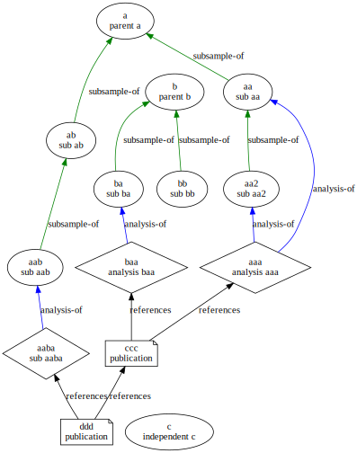

Graphing around with Solr
Notes on querying graphs in Solr
This document outlines how Solr may be used as a labelled property graph, and provides some common query patterns for exploring related content.
Solr graph operations basically involve a breadth-first scan across documents connected by some property from a starting set of documents and optionally applying filters during the traversal or on the resulting set of documents.
The following solr document structure is used for these examples. Two nodes are described, a and aa. The node aa contains a single edge of type subsample-of with a target node of a:
[
{
"id":"a",
"name_t":"parent a",
"is_s":"sample",
"_root_":"a",
},
{
"id":"aa",
"name_t":"sub aa",
"is_s":"sample",
"_root_":"aa",
"edges":[
{
"id":"111",
"relation_type_s":"subsample-of",
"target_s":"a",
"_root_":"aa",
"_nest_parent_":"aa",
"_nest_path_":"/related#0"
}
]
}
]
Note
The fields _root_, _nest_parent_, and _nest_path_ are computed by Solr, and should not be included in the documents when indexing.
Each document structure has two parts - the main document and a optional list of nested child documents that capture relationships with other documents. In this pattern, the outer document is a node of the property graph, and the child edges documents are the edges. Both nodes and edges may have many properties. Solr will index each of these as individually addressable documents and the index will have columns matching the union of columns used in the node documents and in the edge documents. The above example might appear in the index like (excluding the Solr calculated fields):
| id | name_t | is_s | relation_type_s | target_s |
|---|---|---|---|---|
a |
parent a |
sample |
||
aa |
sub aa |
sample |
||
111 |
subsample-of |
a |
The resulting solr index has documents a, aa and 111 in the index with their respective properties. Note that Solr also includes additional properties that record the nested structure. In particular, the properties _nest_parent_, _nest_path_, and _root_ (the latter defaulting to not being presentable in results).
The following graph is used in the examples of different operations.
In the example graph, relations are uni-directional asserting a statement such as “ab is a subsample-of a” and “aaba is an analysis-of aab”, and so forth. The different shapes represent different types of entities as indicated by the is_s property.
The complete list of documents in example_graph is shown in Table 1:
Show the code
import IPython.display
import tabulate
solr = graphutzing.SolrConnection()
res = solr.query(data={"q":"*:*", "rows":100, "sort":"is_s DESC, id ASC",})
header = ["id","name_t","is_s","relation_type_s","target_s","`_nest_parent_`"]
rows = []
for doc in res.get("response",{}).get("docs",[]):
row = [doc.get("id",""),doc.get("name_t",""),doc.get("is_s",""),doc.get("relation_type_s",""),doc.get("target_s",""), doc.get("_nest_parent_","")]
rows.append(row)
IPython.display.Markdown(tabulate.tabulate(
rows,
headers=header,
tablefmt="pipe",
colalign=("right",)
))| id | name_t | is_s | relation_type_s | target_s | _nest_parent_ |
|---|---|---|---|---|---|
| a | parent a | sample | |||
| aa | sub aa | sample | |||
| aa2 | sub aa2 | sample | |||
| aab | sub aab | sample | |||
| ab | sub ab | sample | |||
| b | parent b | sample | |||
| ba | sub ba | sample | |||
| bb | sub bb | sample | |||
| c | independent c | sample | |||
| ccc | publication | publication | |||
| ddd | publication | publication | |||
| aaa | analysis aaa | analysis | |||
| aaba | sub aaba | analysis | |||
| baa | analysis baa | analysis | |||
| 111 | subsample-of | a | aa | ||
| 1111 | subsample-of | aa | aa2 | ||
| 112 | subsample-of | a | ab | ||
| 113 | analysis-of | aa | aaa | ||
| 114 | subsample-of | b | ba | ||
| 114 | analysis-of | aa2 | aaa | ||
| 115 | analysis-of | ba | baa | ||
| 1151 | analysis-of | aab | aaba | ||
| 120 | subsample-of | ab | aab | ||
| 121 | subsample-of | b | bb | ||
| ccc1 | references | aaa | ccc | ||
| ccc2 | references | baa | ccc | ||
| ddd1 | references | ccc | ddd | ||
| ddd2 | references | aaba | ddd |